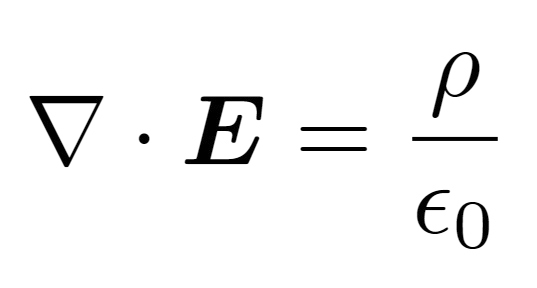

しゃにごろがHTMLの練習をするためのサイトです。まだまだ初心者なので色々ミスがあると思いますがご容赦ください。もしアドバイス等ありましたらぜひご教示いただきたいです<(_ _)>
自己紹介
- 数理に興味を持つ高校生です。最近は東進の苑田先生のおかげで物理にハマっています。あと麻雀とマイクラも好きです。
- このサイトはstudio947さんの著書、「スラスラわかるHTML&CSSのきほん」を参考に制作しました。
- 趣味が似た方いればTwitter(現X)でお声かけください!
各種リンク
| Twitter(現X) | https://x.com/NABLA_DEL(※鍵アカ) https://x.com/nabla_not_math(※麻雀記録用アカ) |
|---|---|
| ポロロッカ | https://pororocca.com/user/4763/ |
| OMC | https://onlinemathcontest.com/users/sha256 |
| mathlog | https://mathlog.info/users/cvpYNqYNOpUpQbceFUwP7588RXI2 |
| quora | https://jp.quora.com/profile/Sha256 |
| GitHub | https://github.com/shanigoroMath |